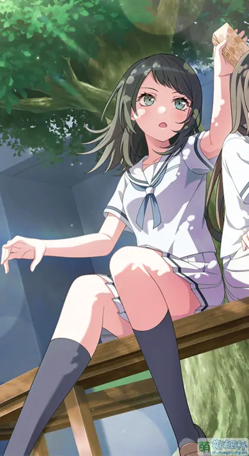
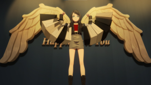

个人简介
Timoris 取自 Lacus Timoris（恐湖），意指恐怖。
担当：贝斯手
生日：4月7日 星座：白羊座
花咲川女子学园高中1年级。
贝斯技巧达到了职业水准，同时担任多支乐团的支援乐手，负责安排成员日务，工作认真细致。
代表色： #335566
CV： 冈田梦以
八幡海玲 / Timoris（ティモリス）
Timoris 取自 Lacus Timoris（恐湖），意指恐怖。
担当：贝斯手
生日：4月7日 星座：白羊座
花咲川女子学园高中1年级。
贝斯技巧达到了职业水准，同时担任多支乐团的支援乐手，负责安排成员日务，工作认真细致。
代表色： #335566
CV： 冈田梦以
八幡海铃早年组乐队时遭遇成员集体缺席，自此开始以支援贝斯手身份活跃于多个乐队，以此掩饰内心的疏离感。升入高中后，她同时参与三十多支乐队，却始终与各乐队保持距离。
在Ave Mujica期间，海铃负责协调成员日程，面对乐队内部冲突始终保持冷静旁观。当若叶睦因压力崩溃衍生出第二人格Mortis时，海铃虽察觉异常却未深入干预。乐队解散后，她以淡然态度面对各方询问，直到目睹CRYCHIC重组演出时，才流露出被触动的情感。
为重组Ave Mujica，海铃首次展现出主动姿态：退出所有支援乐队、帮助Mortis适应演出，并向祥子坦诚内心渴望。在乐队重组过程中，她坚持主张接纳Mortis的存在，最终促成团队和解。重组后的海铃依然负责乐队事务，但开始表现出对同伴的在意，显示出她逐渐打开心扉的转变。
从疏离的旁观者到主动的参与者，海铃在Ave Mujica的历程中完成了自我疗愈，找到了真正属于她的音乐归宿。

八幡海铃设定中担任30支乐队的支援贝斯手，自称实际活跃的乐队为10支。这一设定与RAS舞台剧中LAYER的梗形成呼应。直到《Ave Mujica》第九集才结束支援生涯，专注Ave Mujica活动。
因未明确退出MyGO!!!!!且曾提供支援，评论区常有"MyGO!!!!!第六位成员"的搞怪发言，衍生出"双贝斯手乐队"的趣味讨论。
海铃提到了自己打算重组Ave Mujica被拒的消息，被立希点出：“毕竟海铃你不值得信任。”
自称支援需提前一周预约，却为立希破例当天答应，报酬仅一盒巧克力奶。与立希互动时常伴随熊猫奶冻饮料，立希喜欢巧克力味，海铃却送她蜜柑味。
生日4月7日的读音"shi-nana"与"椎名"(shiina)相似，被视为与立希的天生缘分。
日常使用敬语，只有立希能被称呼名字，其他人只称姓氏。
面具花纹对应彼岸花，代表恐怖。第四话会议上连吃多个马卡龙自称"吃不胖体质"，获"扒饭海铃"绰号，但后续剧情显示家中储备粮充足且母亲关心饮食。
因与Hello, Happy World!的奥泽美咲外貌相似，被调侃为母女/姐妹。
第十三集Live中因大量臀部特写获得"海豚""海屯"等昵称。